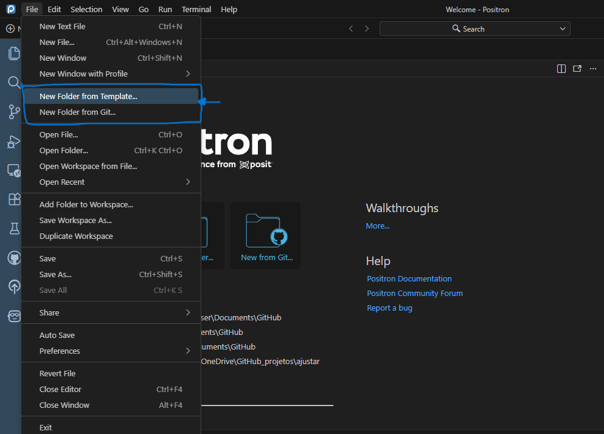
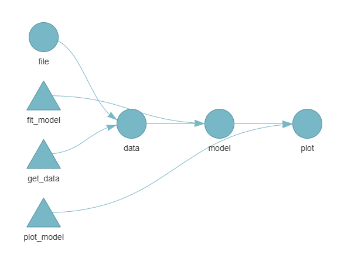
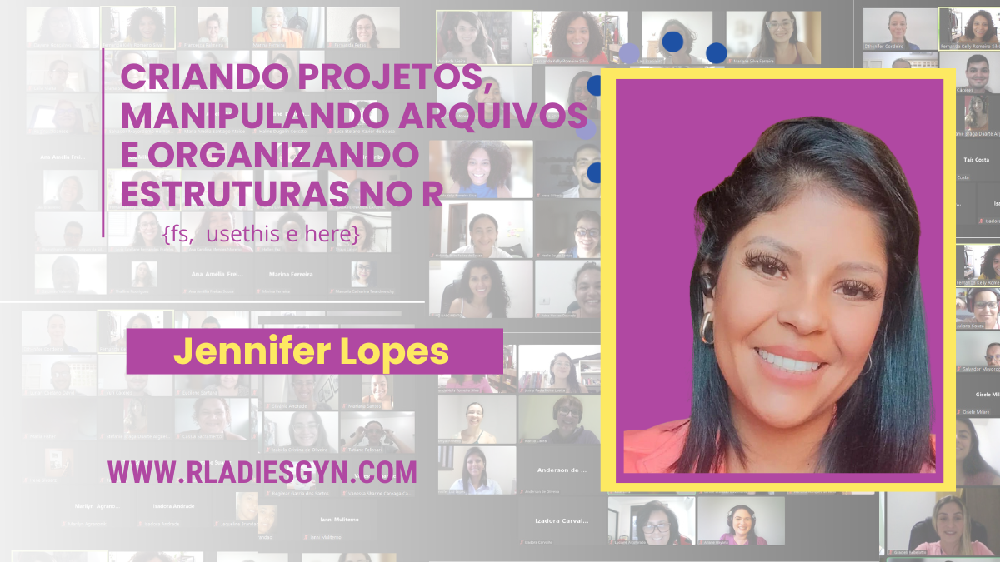

Primeiro café do ano ☕
Como organizar seus projetos desenvolvidos em R para 2026
Bem-vindo ao nosso encontro!
Olá, querida comunidade!
Que alegria ter você aqui para no primeiro café de 2026. Nesta edição especial, preparei uma seleção de ferramentas e rotinas para você aplicar e organizar os seus projetos desenvolvidos no RStudio ou Positron.
Pegue sua xícara favorita e vamos juntos explorar o que há de mais interessante no universo R!
Dose da Semana
Pessoal …..
Sabe aquele momento em que você abre um projeto de R que fez há 3 meses e não consegue entender ou lembrar o que estava fazendo?
Já passei por isso muitas vezes. E se tem duas coisas que aprendi é que organização e documentação É NECESSIDADE BÁSICA no mundo dos dados.
Começamos 2026 e muitos de nós estamos querendo uma melhor organização em tudo. Então que tal aproveitar para deixar seus projetos de R estruturados de um jeito que o você do futuro vai agradecer?
Vem comigo que eu te mostro como.
A base: estrutura de pastas que faz sentido
Antes de mais nada, vamos combinar uma coisa: cada projeto precisa ser um projeto dedicado.
Vocês concordam?
Isso muda a forma que você trabalha porque você não precisa mais ficar usando setwd() para definir caminhos manualmente.
COMO COMEÇAR?
BORA?
Como criar um projeto no RStudio
O primeiro passo é criar um projeto, se você está trabalhando no RStudio.
No RStudio, criar um projeto é simples:
- Vá em File > New Project
- Escolha uma das opções:
- New Directory: cria uma pasta nova para o projeto
- Existing Directory: transforma uma pasta existente em projeto
- Version Control: clona um repositório Git
- Se escolheu “New Directory”, selecione New Project
- Dê um nome para o projeto e escolha onde salvar
- Clique em Create Project
Pronto! O RStudio vai criar um arquivo .Rproj na pasta. É esse arquivo que você deve abrir para trabalhar no projeto.
Veja como criar:


Como criar um projeto no Positron
O Positron, a nova IDE da Posit, também trabalha com projetos:
- Vá em File > New Project
- Escolha o tipo de projeto:
- New Folder from Template: cria um projeto em branco
- Open Folder: transforma uma pasta em projeto
- New Folder from git: clona um repositório Git
- Selecione a pasta onde quer criar o projeto
- O Positron cria automaticamente a estrutura necessária
O Positron reconhece projetos do RStudio (arquivos .Rproj) e vice-versa, então você pode alternar entre as duas IDEs sem problemas.
Uso de projetos no Positron:
- No Positron, as palavras “pasta”, “espaço de trabalho” e “projeto” são usadas quase como sinônimos, pois a forma mais comum de trabalhar é em um espaço de trabalho de pasta única.
Criando projetos no Positron
Opção 1 - Barra file
- O recurso “
New Folder from Template” ajuda você a iniciar novos projetos mais rapidamente.

Opção 1 - Welcome
Opção 2 - Modelos de pastas - Open Folder
- Neste caso você já tem uma pasta com os arquivos do seu projeto.
Opção 3 - Modelos de pastas - New Folder from git
- Clonando o repositório do
GitHub
Aqui vai uma estrutura que uso e funciona muito bem:
meu-projeto/
│
├── meu-projeto.Rproj # O arquivo do projeto
├── README.md # Explica o que é o projeto
├── .gitignore # Ignora coisas desnecessárias
│
├── data/
│ ├── raw/ # Dados originais (NUNCA mexa aqui!)
│ └── processed/ # Dados limpos e processados
│
├── R/
│ ├── 01-importacao.R # Scripts numerados = ordem clara
│ ├── 02-limpeza.R
│ ├── 03-analise.R
│ └── funcoes.R # Suas funções customizadas
│
├── output/
│ ├── figures/ # Seus gráficos
│ ├── tables/ # Tabelas exportadas
│ └── reports/ # Relatórios finais
│
└── docs/
└── analise.qmd # Seus documentos Quarto/RMarkdownPor que essa estrutura?
- Você sempre sabe onde está cada coisa
- Fica fácil compartilhar com outras pessoas
- Dá pra versionar no Git sem problemas
- Scripts numerados mostram a ordem do fluxo de trabalho
Pacotes que vão facilitar sua vida
1. {here} - Fim dos problemas com caminhos de arquivo
install.packages("here")
library(here)
# Em vez de:
dados <- read.csv("C:/Users/SeusDocumentos/Projetos/projeto1/data/arquivo.csv")
# Faça:
dados <- read.csv(here("data", "arquivo.csv"))O {here} sempre encontra a raiz do seu projeto, não importa de onde você rode o script. Funciona como um sistema de navegação para seus arquivos.

2. {renv} - Controle de versão de pacotes
Sabe quando você volta num projeto antigo e nada funciona porque os pacotes atualizaram? O {renv} resolve isso criando um ambiente isolado para cada projeto.
install.packages("renv")
# No seu projeto:
renv::init() # Cria o ambiente
renv::snapshot() # Salva as versões dos pacotes
renv::restore() # Restaura as versões salvasIsso permite que você restaure exatamente as mesmas versões dos pacotes quando voltar ao projeto. Uso em todos os projetos importantes.
3. {usethis} - Automatiza tarefas repetitivas
Este pacote é uma ferramenta versátil para criar e configurar projetos:
install.packages("usethis")
library(usethis)
# Cria um projeto novo já estruturado
usethis::create_project("~/meu-novo-projeto")
# Adiciona README
usethis::use_readme_md()
# Inicializa Git
usethis::use_git()
# Adiciona .gitignore com templates prontos
usethis::git_vaccinate()
# Cria arquivo de funções
usethis::use_r("minhas_funcoes")Ele automatiza em segundos o que você levaria vários minutos fazendo manualmente.
EU AMO ESSE PACOTE!
4. {targets} - Para pipelines mais complexos
Se você trabalha com análises que têm várias etapas e demoram para rodar, o {targets} é muito útil. Ele cria um pipeline onde só reprocessa o que mudou.
install.packages("targets")
# Exemplo básico de _targets.R:
library(targets)
list(
tar_target(dados_raw, ler_dados()),
tar_target(dados_limpos, limpar_dados(dados_raw)),
tar_target(modelo, treinar_modelo(dados_limpos)),
tar_target(relatorio, gerar_relatorio(modelo)))Mudou só a visualização? Ele não refaz a importação e limpeza dos dados. Isso economiza muito tempo.

Documente pensando no futuro
Você provavelmente vai esquecer detalhes do projeto depois de algum tempo. Por isso a documentação é importante.
README.md
Todo projeto precisa de um README explicando:
O que é o projeto
Quais pacotes precisa
Como rodar
Quem criou e quando
Exemplo básico:
# Análise de Vendas 2026
Análise exploratória dos dados de vendas da empresa no último ano.
## Pacotes necessários
```r
install.packages(c("tidyverse", "here", "janitor"))Como rodar
- Abra o arquivo
analise-vendas.Rproj - Execute os scripts na pasta
R/em ordem numérica - O relatório final estará em
output/reports/
Autor
Seu Nome - Janeiro/2026
---
### Comente seu código (mas comente bem)
```r
# Comentário ruim:
x <- dados %>% filter(idade > 18) # filtra idade
# Comentário bom:
# Remove menores de idade pois a análise foca apenas no público adulto
dados_adultos <- dados %>%
filter(idade > 18)
# Ainda melhor - adiciona contexto de negócio:
# Regulamentação interna exige análise separada para menores de idade
# devido a políticas de proteção de dados (ver doc #123)
dados_adultos <- dados %>%
filter(idade > 18)Convenções de nomenclatura que funcionam
Arquivos de script:
Use números para ordem:
01-,02-,03-Nomes descritivos:
01-importacao-dados.R, nãoscript.RTudo em minúsculo, use hífens:
analise-vendas.R, nãoAnáliseVendas.R
Versione com Git (mesmo que seja só você)
Muita gente acha que Git é só para trabalho em equipe, mas ele também é útil para não perder trabalho e poder voltar a versões anteriores quando necessário.
Comandos básicos para começar:
# No terminal do RStudio ou Positron:
git init
git add .
git commit -m "Versão inicial do projeto"
# A cada avanço importante:
git add .
git commit -m "Adiciona análise exploratória"Dica importante: faça commits com frequência.
Dica de livro, com explicações sobre Git e GitHub: Happy Git and GitHub for the useR
Template inicial
Não precisa criar tudo do zero. Já trouxe um exemplo para você aplicar.
# Estrutura simples mas eficiente
usethis::create_project("analise-rapida")
usethis::use_readme_md()
usethis::use_r("funcoes")
fs::dir_create(c("data/raw", "data/processed", "output"))Tutorial completo para apoiar vocês:

Minha rotina de início de projeto (checklist)
Quando começo um projeto novo, sigo estes passos:
- Criar projeto no RStudio ou Positron
- Inicializar
{renv}se for algo importante - Criar estrutura de pastas
- Adicionar README.md
- Inicializar Git
- Criar .gitignore apropriado
- Fazer primeiro commit
Parece muito, pouco? Depois de fazer algumas vezes vira automático, e o {usethis} ajuda bastante.
Mensagem final para os cafezeiros de plantão!
Sei que no começo pode parecer trabalhoso organizar tudo. Você está animado para fazer a análise e não quer perder tempo com estrutura, README, etc.
Mas a verdade é: você não está perdendo tempo, está ganhando tempo.
Cada minuto que você investe organizando agora economiza horas depois quando precisar:
Voltar no projeto daqui 6 meses
Compartilhar com alguém
Replicar a análise com dados novos
Descobrir onde há algum problema
Comece com o básico (projetos + estrutura de pastas + README) e vá adicionando as outras práticas aos poucos. Não precisa ser perfeito, precisa ser melhor que antes.
E você, como organiza seus projetos? Tem alguma dica que não mencionei aqui?
Me conta nos comentários ou responde esse email. Gosto de trocar ideias sobre workflow.
Um abraço e bom café (com R)!
P.S.: Se você achou útil, compartilhe com aquele amigo que vive perdido nos próprios scripts.
☕ Assine o Café com R
Que cada gole desperte uma nova ideia.
Que cada script abra uma nova conversa.
Que o Café com R, se torne um ponto de encontro nosso!